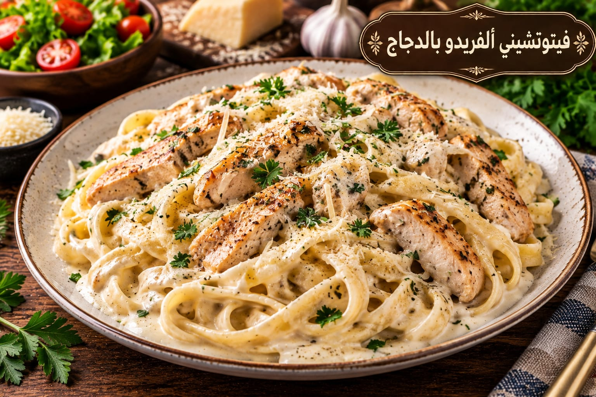

فيتوتشيني ألفريدو بالدجاج
معكرونة كريمية بالدجاج

مقادير فيتوتشيني ألفريدو بالدجاج
- 400 غ فيتوتشيني
- 500 غ صدر دجاج شرائح
- 2 ملعقة كبيرة زبدة
- 2 فص ثوم
- 2 كوب كريمة طبخ
- ½ كوب بارميزان
- 1 ملعقة صغيرة ملح لماء السلق
- ½ ملعقة صغيرة فلفل أسود
- ½ كوب ماء سلق
طريقة عمل فيتوتشيني ألفريدو بالدجاج
- اسلقي المعكرونة في ماء مملح حتى أل دينتي واحتفظي بنصف كوب من ماء السلق.
- تبلي الدجاج بقليل من الملح والفلفل وحمريه حتى ينضج ثم ارفعيه.
- ذوبي الزبدة وأضيفي الثوم ثم الكريمة والفلفل والبارميزان.
- أعيدي الدجاج وأضيفي المعكرونة وقليلًا من ماء السلق حتى يصبح القوام كريميًا.